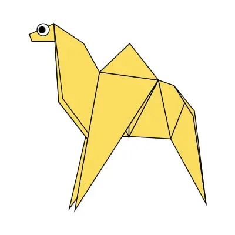

butterfly
- Butterflies wings are transparest.
- Butterflies use theig feets to taste.
- Butterflies only live for few weeks.

frog
- Frogs drink water through their skin. ...
- Frogs are found all over the world. ...
- The world's largest frog species is known as the 'Goliath Frog' ...

camel
- There are two types of camels: One humped or “dromedary” camels and two humped Bactrian camels.
- Camels have three sets of eyelids and two rows of eyelashes to keep sand out of their eyes.
- Camels have thick lips which let them forage for thorny plants other animals can’t eat.

dog
- Dogs can sniff at the same time as breathing. ...
- Some dogs are incredible swimmers. ...
- Some are fast and could even beat a cheetah! ...
- Dogs don't sweat like we do.

cat
- Cats are one of, if not the most, popular pet in the world.
- There are over 500 million domestic cats in the world.
- Cats and humans have been associated for nearly 10000 years.
- Cats conserve energy by sleeping for an average of 13 to14 hours a day.

panda
- Giant pandas are good at climbing trees and can also swim. ...
- Pandas go from pink to white and black (or brown). ...
- Pandas have so many fans because they look cute. ...
- Pandas are "lazy" — eating and sleeping make their day. ...

bird
- Birds don't have teeth. ...
- Birds are great communicators. ...
- A group of birds is called a flock. ...
- Some birds can mimic humans!

fish
- Fish have scales.
- Fish talk to each other.
- Fish have small brains.